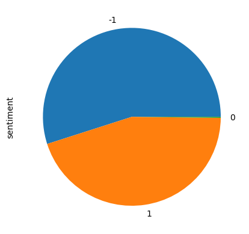

data_in = "../data"Metadata
Course: DS 5001
Module: 10 Lab
Topic: Import General Inquirer Sentiment Lexicon
Author: R.C. Alvarado
Date: 02 April 2023 (revised)Purpose: * Convert General Inquirer lexicon into usable form. * Download the spreadsheet. * May have to install xlrd
Setting Up
import pandas as pd
import numpy as npImport GI Excel file
It has 182 ontology/sentiment columns
df = pd.read_excel(f'{data_in}/lexicons/sources/inquirerbasic.xls', false_values=None)df.sample(10)| Entry | Source | Positiv | Negativ | Pstv | Affil | Ngtv | Hostile | Strong | Power | ... | Anomie | NegAff | PosAff | SureLw | If | NotLw | TimeSpc | FormLw | Othtags | Defined | |
|---|---|---|---|---|---|---|---|---|---|---|---|---|---|---|---|---|---|---|---|---|---|
| 662 | ARTICULATE#2 | H4Lvd | NaN | NaN | NaN | NaN | NaN | NaN | Strong | NaN | ... | NaN | NaN | NaN | NaN | NaN | NaN | NaN | FormLw | Modif SUPV | | |
| 8201 | QUALITY#1 | H4Lvd | NaN | NaN | NaN | NaN | NaN | NaN | NaN | NaN | ... | NaN | NaN | NaN | NaN | NaN | NaN | NaN | NaN | Noun | | 56% noun: Attribute, characteristic, charact... |
| 2555 | CURSE#1 | H4Lvd | NaN | Negativ | NaN | NaN | Ngtv | Hostile | NaN | NaN | ... | NaN | NaN | NaN | NaN | NaN | NaN | NaN | FormLw | Noun | | |
| 11285 | VILLAGE | H4Lvd | NaN | NaN | NaN | NaN | NaN | NaN | NaN | NaN | ... | NaN | NaN | NaN | NaN | NaN | NaN | NaN | NaN | Noun | | noun-adj: A small rural community |
| 7379 | PALISTINE | Lvd | NaN | NaN | NaN | NaN | NaN | NaN | NaN | NaN | ... | NaN | NaN | NaN | NaN | NaN | NaN | NaN | NaN | Noun POLIT ECON PLACE | NaN |
| 5963 | LAWFUL | H4Lvd | Positiv | NaN | NaN | NaN | NaN | NaN | NaN | NaN | ... | NaN | NaN | NaN | NaN | NaN | NaN | NaN | NaN | Modif | | |
| 5808 | JUNK | H4 | NaN | Negativ | NaN | NaN | NaN | NaN | NaN | NaN | ... | NaN | NaN | NaN | NaN | NaN | NaN | NaN | NaN | Noun | | |
| 298 | AGREE#1 | H4Lvd | NaN | NaN | Pstv | Affil | NaN | NaN | NaN | NaN | ... | NaN | NaN | NaN | NaN | NaN | NaN | NaN | NaN | SUPV | | 96% verb: To be of one mind, harmonize in op... |
| 2467 | CRIMINAL | H4Lvd | NaN | Negativ | NaN | NaN | Ngtv | Hostile | NaN | NaN | ... | NaN | NaN | NaN | NaN | NaN | NaN | NaN | NaN | Noun Modif | | |
| 2790 | DEPEND#2 | H4Lvd | NaN | NaN | NaN | NaN | NaN | NaN | NaN | NaN | ... | NaN | NaN | NaN | NaN | NaN | NaN | NaN | NaN | SUPV | | 27% verb: Rely (upon) |
10 rows × 186 columns
Handle variant terms
Split entries like FASCINATE#1 and FASCINATE#2 with FASCINATE, 1 and FASCINATE, 2 (so our data are atomic).
df['split'] = df.Entry.str.split(r'[#_]+')# Function to add 1 to terms without variants
def add_1(x):
try:
if len(x) == 1:
x = x + ['1']
except:
print(x)
x = 0
return xdf['split'] = df['split'].apply(add_1)
df['term_str'] = df['split'].apply(lambda x: x[0].lower(), 1)
df['term_var'] = df['split'].apply(lambda x: x[1], 1)
df = df.set_index(['term_str', 'term_var']).sort_index()df.reset_index().term_var.value_counts().plot.bar(rot=0)<AxesSubplot: >
df.sample(10)| Entry | Source | Positiv | Negativ | Pstv | Affil | Ngtv | Hostile | Strong | Power | ... | NegAff | PosAff | SureLw | If | NotLw | TimeSpc | FormLw | Othtags | Defined | split | ||
|---|---|---|---|---|---|---|---|---|---|---|---|---|---|---|---|---|---|---|---|---|---|---|
| term_str | term_var | |||||||||||||||||||||
| answerable | 1 | ANSWERABLE | Lvd | NaN | NaN | NaN | NaN | NaN | NaN | NaN | NaN | ... | NaN | NaN | NaN | NaN | NaN | NaN | NaN | Modif | NaN | [ANSWERABLE, 1] |
| creek | 1 | CREEK | H4Lvd | NaN | NaN | NaN | NaN | NaN | NaN | NaN | NaN | ... | NaN | NaN | NaN | NaN | NaN | NaN | NaN | Noun | | | [CREEK, 1] |
| venture | 1 | VENTURE#1 | H4Lvd | NaN | NaN | NaN | NaN | NaN | NaN | NaN | NaN | ... | NaN | NaN | NaN | NaN | NaN | NaN | NaN | Noun | | | [VENTURE, 1] |
| molecular | 1 | MOLECULAR | H4Lvd | NaN | NaN | NaN | NaN | NaN | NaN | NaN | NaN | ... | NaN | NaN | NaN | NaN | NaN | NaN | NaN | Modif | | | [MOLECULAR, 1] |
| hideous | 1 | HIDEOUS | H4Lvd | NaN | Negativ | NaN | NaN | Ngtv | NaN | NaN | NaN | ... | NegAff | NaN | NaN | NaN | NaN | NaN | NaN | Modif | | | [HIDEOUS, 1] |
| cooperative | 1 | COOPERATIVE#1 | H4Lvd | Positiv | NaN | Pstv | Affil | NaN | NaN | Strong | NaN | ... | NaN | NaN | NaN | NaN | NaN | NaN | NaN | Noun | | 68% noun-adj: An organization for the benefi... | [COOPERATIVE, 1] |
| lose | 3 | LOSE#3 | H4Lvd | NaN | NaN | NaN | NaN | NaN | NaN | NaN | NaN | ... | NaN | NaN | NaN | NaN | NaN | NaN | NaN | Handels | | 2% idiom-verb: "Lose (one's) mind"--lose one... | [LOSE, 3] |
| sudden | 2 | SUDDEN#2 | H4Lvd | NaN | NaN | NaN | NaN | NaN | NaN | NaN | NaN | ... | NegAff | NaN | NaN | NaN | NaN | NaN | NaN | LY | | 80% adverb-idiom: "Suddenly," or "all of a s... | [SUDDEN, 2] |
| say | 1 | SAY#1 | H4Lvd | NaN | NaN | NaN | NaN | NaN | NaN | NaN | NaN | ... | NaN | NaN | NaN | NaN | NaN | NaN | NaN | SUPV PFREQ | | 91% verb: To utter or pronounce, express in ... | [SAY, 1] |
| marksman | 1 | MARKSMAN | H4Lvd | NaN | NaN | NaN | NaN | NaN | Hostile | NaN | NaN | ... | NaN | NaN | NaN | NaN | NaN | NaN | NaN | Noun | | | [MARKSMAN, 1] |
10 rows × 187 columns
Convert column values to numbers
df = df.sort_index()try:
df.loc[df.Positiv == 'Positiv', 'polarity'] = 1
df.loc[df.Negativ == 'Negativ', 'polarity'] = -1
df['polarity'] = df['polarity'].fillna(0).astype('int')
except TypeError as e:
print(e, "-- This means you are re-running the script with values that have already been set.")df.polarity.sample(10)term_str term_var
reassure 1 1
rough 1 -1
indulgence 1 1
orleans 1 0
sovereignty 1 0
choose 1 0
fine 1 1
scandalous 1 -1
liberty 1 1
allow 1 1
Name: polarity, dtype: int64VALCOLS = df.columns[2:-4]df[VALCOLS] = df[VALCOLS].fillna(0).astype('bool').astype('int')df.loc['love', VALCOLS]#.stack().sort_values(ascending=False)| Positiv | Negativ | Pstv | Affil | Ngtv | Hostile | Strong | Power | Weak | Submit | ... | PtLw | Nation | Anomie | NegAff | PosAff | SureLw | If | NotLw | TimeSpc | FormLw | |
|---|---|---|---|---|---|---|---|---|---|---|---|---|---|---|---|---|---|---|---|---|---|
| term_var | |||||||||||||||||||||
| 1 | 1 | 0 | 1 | 1 | 0 | 0 | 0 | 0 | 0 | 0 | ... | 0 | 0 | 0 | 0 | 0 | 0 | 0 | 0 | 0 | 0 |
| 2 | 1 | 0 | 1 | 1 | 0 | 0 | 0 | 0 | 0 | 0 | ... | 0 | 0 | 0 | 0 | 0 | 0 | 0 | 0 | 0 | 0 |
| 3 | 1 | 0 | 1 | 1 | 0 | 0 | 0 | 0 | 0 | 0 | ... | 0 | 0 | 0 | 0 | 0 | 0 | 0 | 0 | 0 | 0 |
| 4 | 1 | 0 | 1 | 1 | 0 | 0 | 0 | 0 | 0 | 0 | ... | 0 | 0 | 0 | 0 | 0 | 0 | 0 | 0 | 0 | 0 |
| 5 | 0 | 0 | 0 | 1 | 0 | 0 | 1 | 0 | 0 | 0 | ... | 0 | 0 | 0 | 0 | 0 | 0 | 0 | 0 | 0 | 0 |
| 6 | 0 | 0 | 0 | 1 | 0 | 0 | 0 | 0 | 0 | 0 | ... | 0 | 0 | 0 | 0 | 0 | 0 | 0 | 0 | 0 | 0 |
| 7 | 0 | 0 | 0 | 0 | 0 | 0 | 0 | 0 | 0 | 0 | ... | 0 | 0 | 0 | 0 | 0 | 0 | 0 | 0 | 0 | 0 |
7 rows × 182 columns
# df.loc['love', (].T.style.background_gradient()Take and combine only sentiment
sents = df.query("Positiv > 0 | Negativ > 0").copy()sents['sentiment'] = sents.Positiv - sents.Negativsents['sentiment'].sample(5)term_str term_var
meager 1 -1
corruption 1 -1
visualization 1 1
arbitrate 1 1
attack 2 -1
Name: sentiment, dtype: int64Take average of variants
GI = sents.groupby('term_str').sentiment.mean()Snap values to -1, 0, or 1
GI = np.sign(GI).astype('int').to_frame()GI.shape(3626, 1)GI.sample(10)| sentiment | |
|---|---|
| term_str | |
| erode | -1 |
| relieve | 1 |
| complex | -1 |
| haunt | -1 |
| cruel | -1 |
| crumble | -1 |
| exuberant | 1 |
| realistically | 1 |
| default | -1 |
| nuts | -1 |
GI.sentiment.value_counts().plot.pie()<AxesSubplot: ylabel='sentiment'>
Save
GI.to_csv(data_in + '/lexicons/sources/gi.csv')